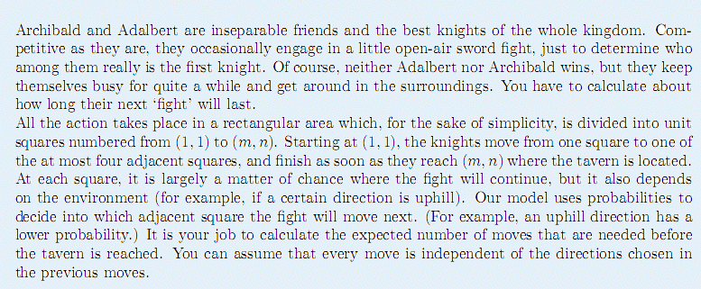
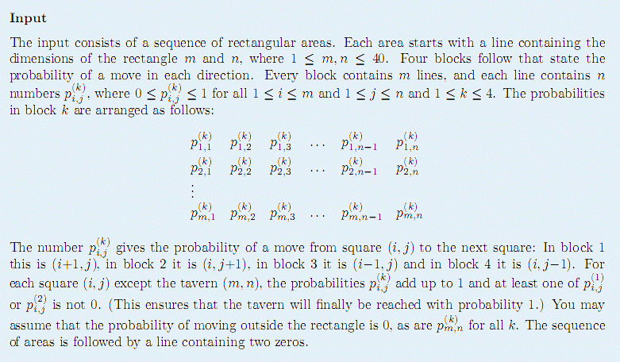
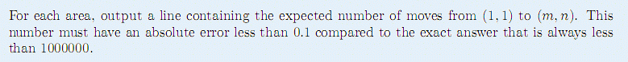

F.A.Qs
Home
Discuss
ProblemSet
Status
Ranklist
Contest
入门OJ
ModifyUser
Xeonacid
Logout
捐赠本站
Notice:
注册本OJ方式请见https://www.lydsy.com/JudgeOnline/wttl/thread.php?tid=5671
Problem 3317. -- [Swerc2008]First Knight
3317: [Swerc2008]First Knight
Time Limit:
1 Sec
Memory Limit:
128 MBSec
Special Judge
Submit:
111
Solved:
28
[
Submit
][
Status
][
Discuss
]
Description

一个
m
×
n
的棋盘，左上至右下编号为
(1, 1)
至
(
m
,
n
)
，并给定每个格子到周围四个格子的概
率 。
一个骑士从
(1, 1)
开始，按照给定概率走，问到
达
(
m
,
n
)
的期望步数。
题目保证从任一格开始到
(m, n)
的概率均为
1
。
Input

Output

Sample Input
2 2
0.01 0.50
0.00 0.00
0.99 0.00
0.50 0.00
0.00 0.00
0.50 0.00
0.00 0.50
0.00 0.00
1 5
0.0 0.0 0.0 0.0 0.0
1.0 0.1 0.7 0.5 0.0
0.0 0.0 0.0 0.0 0.0
0.0 0.9 0.3 0.5 0.0
3 3
0.000001 0.0 1.0
0.0 1.0 1.0
0.0 0.0 0.0
0.999999 1.0 0.0
1.0 0.0 0.0
0.000001 0.000001 0.0
0.0 0.0 0.0
0.0 0.0 0.0
0.999999 0.0 0.0
0.0 0.0 0.0
0.0 0.0 0.0
0.0 0.999999 0.0
0 0
Sample Output
4.0
41.142857142857146
7.999994000002
HINT
Source
WCMG提供SPJ
[
Submit
][
Status
][
Discuss
]
HOME
Back